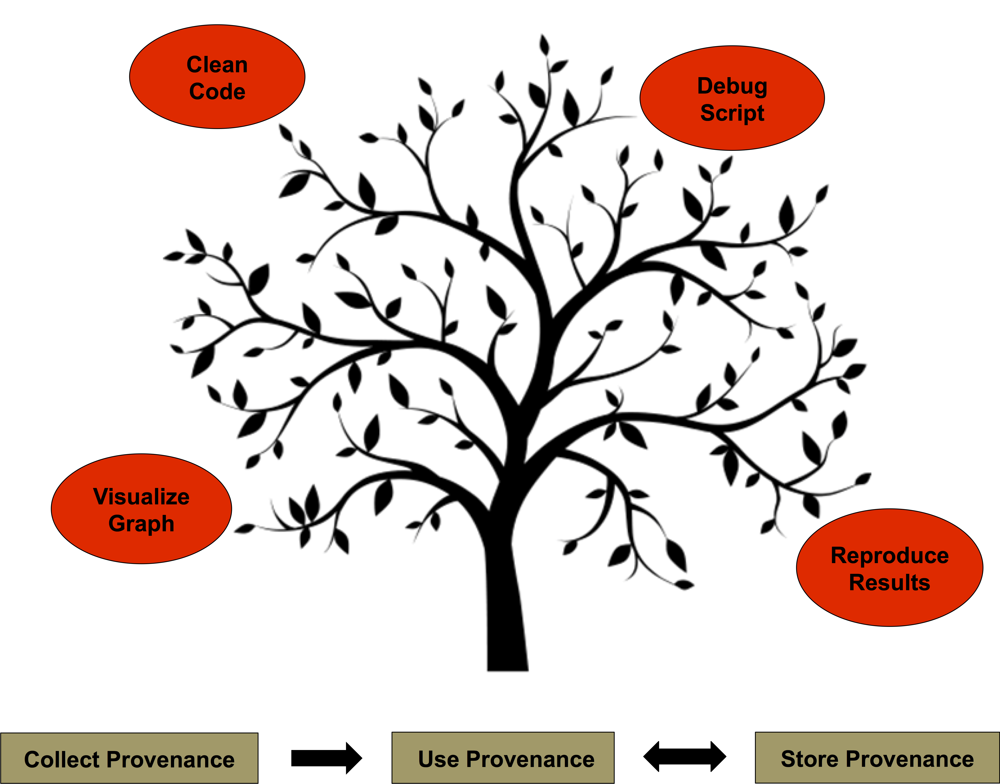

|
Barbara Lerner Elizabeth Fong Mount Holyoke College |
Emery Boose Aaron Ellison Harvard Forest |
Margo Seltzer University of British Columbia |
|
Thomas Pasquier University of Bristol |
Joe Wonsil Carthage College |
Orenna Brand Columbia University |
 In this project, we have focused on the collection of provenance from R scripts using a tool called RDataTracker. The collected provenance consists of an execution history of the script, including intermediate data values, copies of scripts used, as well as input and output files and plots created. This information is stored in the file system for later use.
The main focus of our current research is thinking beyond provenance as purely archival data. How can scientists leverage provenance to improve the science?
Understanding and debugging scripts
Provenance can help a scientist understand how a script is behaving. Using this knowledge, the scientist can determine what is causing a script to produce incorrect output, or to convince the scientist that the behavior is correct.
One tool to help understand script behavior is provViz, a visualizer that allows the scientist to see which lines of code were executed, variable values before and after those lines are executed, and saved copies of input and output files and graphs.
Another tool that allows a scientist to gain a better understanding of their script's behavior is provDebugR. provDebugR is a time-travelling debugger. It allows the user to examine the state of the variables in their script at different points of execution, after the script has completed execution. It provides access to the same information as provViz, but with a user interface that is familiar to anyone used to using a debugger. With this tool a script can be debugged by running it once and examining the collected provenance, rather than setting breakpoints, inserting print statements, and running the script multiple times.
Reproducing script execution
An important problem in science is the need for reproducibility. While this is clearly evident in experiments that require the collection and measurement of physical artifacts, it is also a problem for reproducing results from data analysis. Having the data and script is not necessarily sufficient to be able to reproduce the results. Libraries that a script depends on may change, the language implementation may change, the platform on which the script is executed might change. Any of these changes can result in the script no longer producing the same result. Encapsulator is a tool that builds a virtual machine that encapsulates the script, its data, and the libraries it uses into a virtual machine that can be re-run to produce the exact result. An encapsulated script could be associated with a publication, giving scientists the opportunity to verify and build on each other's analytic work in a very concrete way.
Cleaning script code
Scientists often build scripts in an exploratory way. They may write some code to read data, do some analysis and produce a plot. They will then study the plot and develop more questions which they answer by writing more code, producing more plots, etc. In the end, they may want to write a paper or share code that is based on only some of the output plots. It can be a tedious and error-prone process to manually disentangle the code and be left with just the code that produced the most valuable results. Rclean uses provenance to identify which lines of code were used to produce the output of interest. It then extracts those lines of code from the original script, producing a cleaned version of the code.